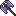

Ера Драконів
Під час цього івенту ви можете придбати тваринок - драконів.
Для того щоб пет з’явився в магазині вам потрібно повністю заповнити кодекс аналогічного боса.
Босів драконів можна зустріти під час полювання в світі, в звичайних підземеллях або в драконячих підземеллях (найшвидший варіант).
Боси будуть доступні по черзі, тільки “закривши” Т5 боса ви зможете побачити Т6 і так далі до Т10. (Якщо під час проходження підземелля ви “закрили” певного дракона, то будьте готові, що далі в цьому ж підземеллі вже може з’явитись наступний по черзі дракон).
Перелік босів
 T5 Лотан, Кручений Змій (Lotan, Coiled One)
T5 Лотан, Кручений Змій (Lotan, Coiled One)
T6 Врітра, Непохитна Змія (Vritra the Steadfast)
 T7 Агатодаймон, Руйнівний Змій (Agathodaemon)
T7 Агатодаймон, Руйнівний Змій (Agathodaemon)
 T7 Зальтис, Добрий Змій (Zaltys, Friendly One)
T7 Зальтис, Добрий Змій (Zaltys, Friendly One)
 T8 Іллуянка, Кам'яна Змія (Illuyanka, Made of Stone)
T8 Іллуянка, Кам'яна Змія (Illuyanka, Made of Stone)
 T8 Бейтір, Багатоликий Змій (Beithir)
T8 Бейтір, Багатоликий Змій (Beithir)
(немає аналогічного пета)
 T9 Баше, Ненаситний Змій (Bashe, Hungry One)
T9 Баше, Ненаситний Змій (Bashe, Hungry One)
T9 Кукулькан, Пернатий Змій (Quetzalcoatl, Feathered One)
T10 Змій Горинич, Син гір (Gorynych, Son of Mountains)
T10 Імір, Первісний Змієкрил (Ymir Amphiptere)
Корисні речі
Відлога занепалих небес (Fallen Sky Hood) - T10 шолом +10% відстань огляду, ВО не залежить від якості шолома, тому можна лишити і звичайний.
 Шолом занепалих небес (Fallen Sky Helmet) - T10 шолом +10% відстань огляду, ВО не залежить від якості шолома, тому можна лишити і звичайний.
Шолом занепалих небес (Fallen Sky Helmet) - T10 шолом +10% відстань огляду, ВО не залежить від якості шолома, тому можна лишити і звичайний.
 (Первісний) Оберіг Врітри ((Ymir) Vritra Charm) - імунітет до Stun, Paralyze, Petrify, також +8% захист від ДОТів.
(Первісний) Оберіг Врітри ((Ymir) Vritra Charm) - імунітет до Stun, Paralyze, Petrify, також +8% захист від ДОТів.

 Зброя Випробувань - сокира, посох, лук (Trialing Weapons) - +5% EXP, +10% Gold\Orns (двуручна зброя).
Зброя Випробувань - сокира, посох, лук (Trialing Weapons) - +5% EXP, +10% Gold\Orns (двуручна зброя).
 Самоцвіт Творіння (Jewel of Creation) - топове каміння в броню.
Самоцвіт Творіння (Jewel of Creation) - топове каміння в броню.
Скіли, тваринки та речі які можуть знадобитись
Тваринки :
Arisen Naggeneen - івентовий пет, б’є основними стихіями, накидає

Скіли / Дебафи :
Майже всі скіли певної стихії накладають свої дебафи, тому якщо в вас немає класа
Вогонь -
Земля -
Блискавка -
Вода -
Fire / Earth / Lightning / Ice / Holy / Dark / Dragon Strike - для заповнення кодексу раджу використовувати самі слабкі версії цих скілів, щоб не вбити боса передчасно.
Якщо у вас немає класу Archdruid, можна використовувати такі спели :
Ще варіант, це “зібрати” зброю з дебафами та атрибут драконів.
Камінці в зброю, які накладають дебафи :
Команда для бота в діскорді, яка покаже вам вміння які накладають певний дебаф
!causes *назва дебафу*
T5 Лотан, Кручений Змій (Lotan, Coiled One)

T6 Врітра, Непохитна Змія (Vritra the Steadfast)

T7 Агатодаймон, Руйнівний Змій (Agathodaemon)

T7 Зальтис, Добрий Змій (Zaltys, Friendly One)

T8 Іллуянка, Кам'яна Змія (Illuyanka, Made of Stone)
T8 Бейтір, Багатоликий Змій (Beithir)
T9 Баше, Ненаситний Змій (Bashe, Hungry One)
T9 Кукулькан, Пернатий Змій (Quetzalcoatl, Feathered One)
T10 Змій Горинич, Син гір (Gorynych, Son of Mountains)
T10 Імір, Первісний Змієкрил (Ymir Amphiptere)